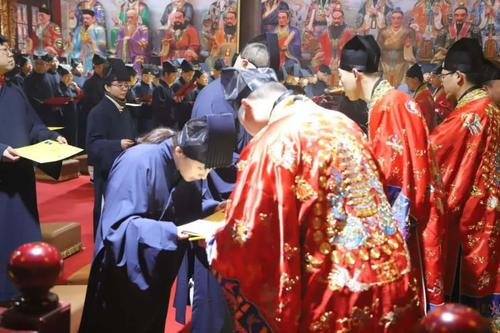
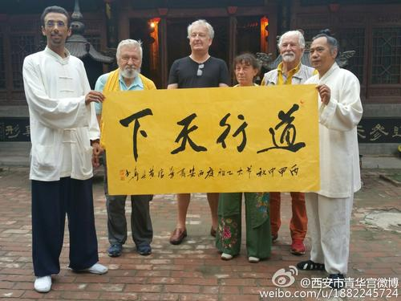
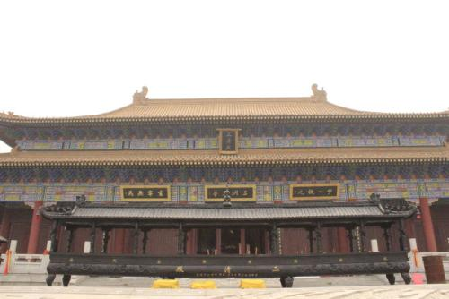

道教起源
道教的名称来源，一则起于古代之《易经》，一部既古老又新奇，既陌生又熟悉，既高深莫测，又简单容易，解开宇宙人生密码的宝典；二则起于《老子》的道论，首见于《老子不是“太上老君”》这本为布道而写的经书。一般学术界认为，道教的第一部正式经典是《太平经》，完成于东汉，因此将东汉时期视作道教的初创时期。道教正式有道教实体活动是在东汉末年太平道和五斗米道的出现，而《太平经》、《周易参同契》、《老子想尔注》三书是道教信仰和理论形成的标志。近年来，道家的“天人合一”的思想、宇宙观日益受到重视，并引起了西方世界的兴趣，也使得道教获得更多关注。道教教义中虽有道学成分，但远远不足以代表道学精神，远远不足以传达老庄思想，二者万万不可混同。
三大主神
道教简介
道教是中国本土宗教，以“道”为最高信仰。道教在中国古代鬼神崇拜观念上，以黄、老道家思想为理论根据，承袭战国以来的神仙方术衍化形成。东汉末年出现大量道教组织，著名的有太平道、五斗米道。祖天师张道陵正式创立教团组织，距今已有1800年历史。道教为多神崇拜，尊奉的神仙是将道教对“道”之信仰人格化体现。道士是道教的神职人员，全国现有住观道士3万余人。宫观是道教徒活动的场所，全国现登记开放的宫观有2千余座。 更多了解
信徒&建筑


